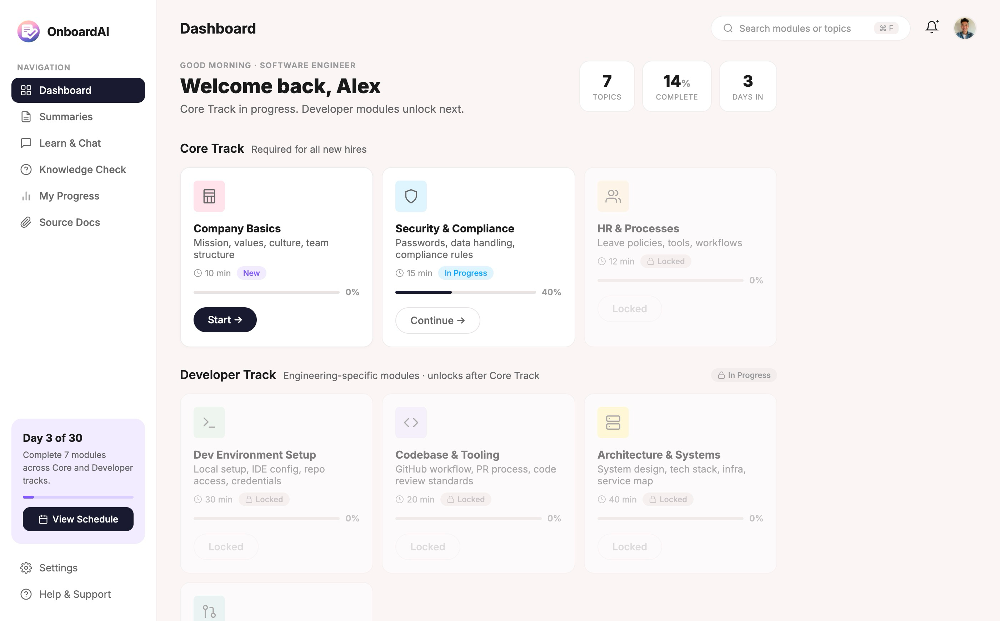
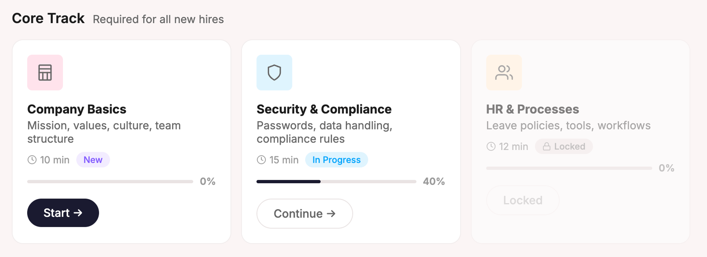
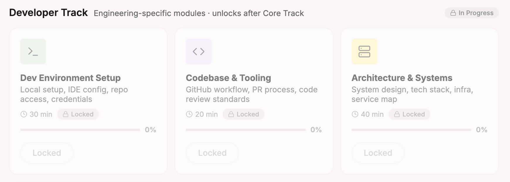
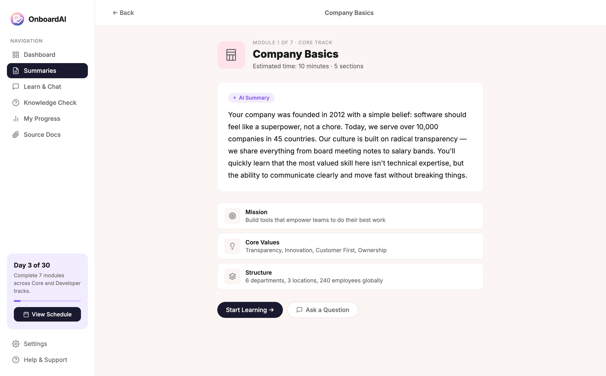
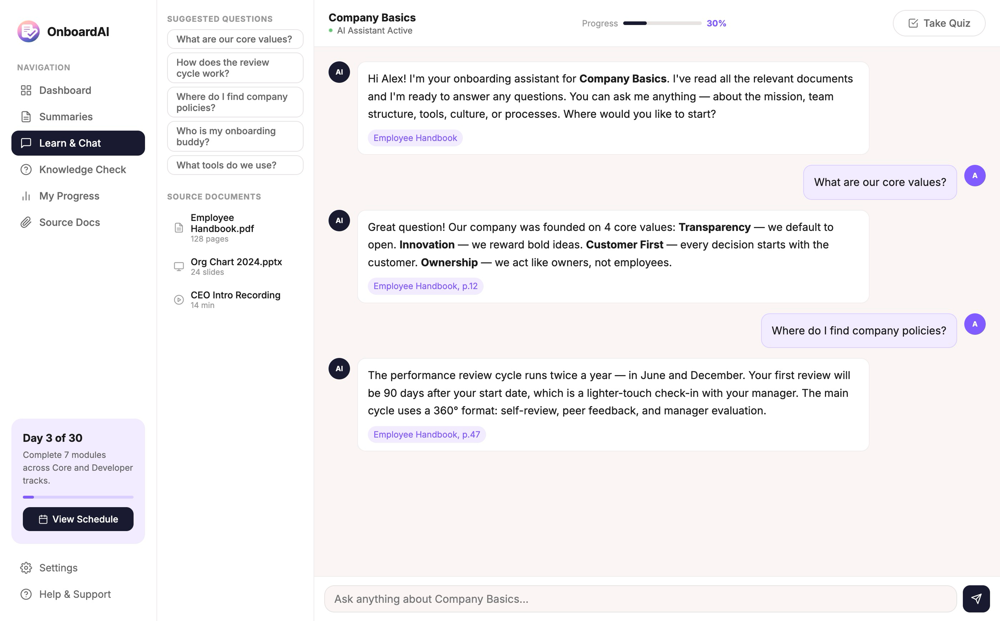
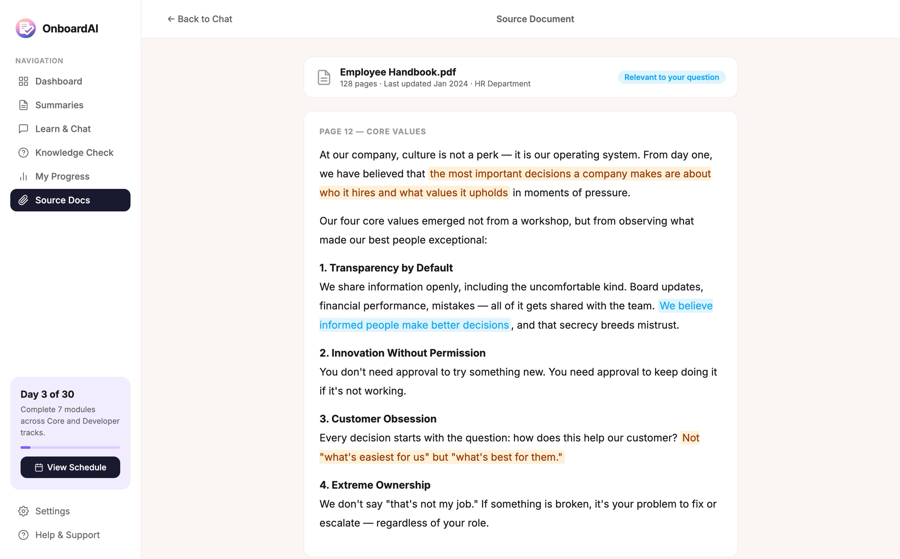
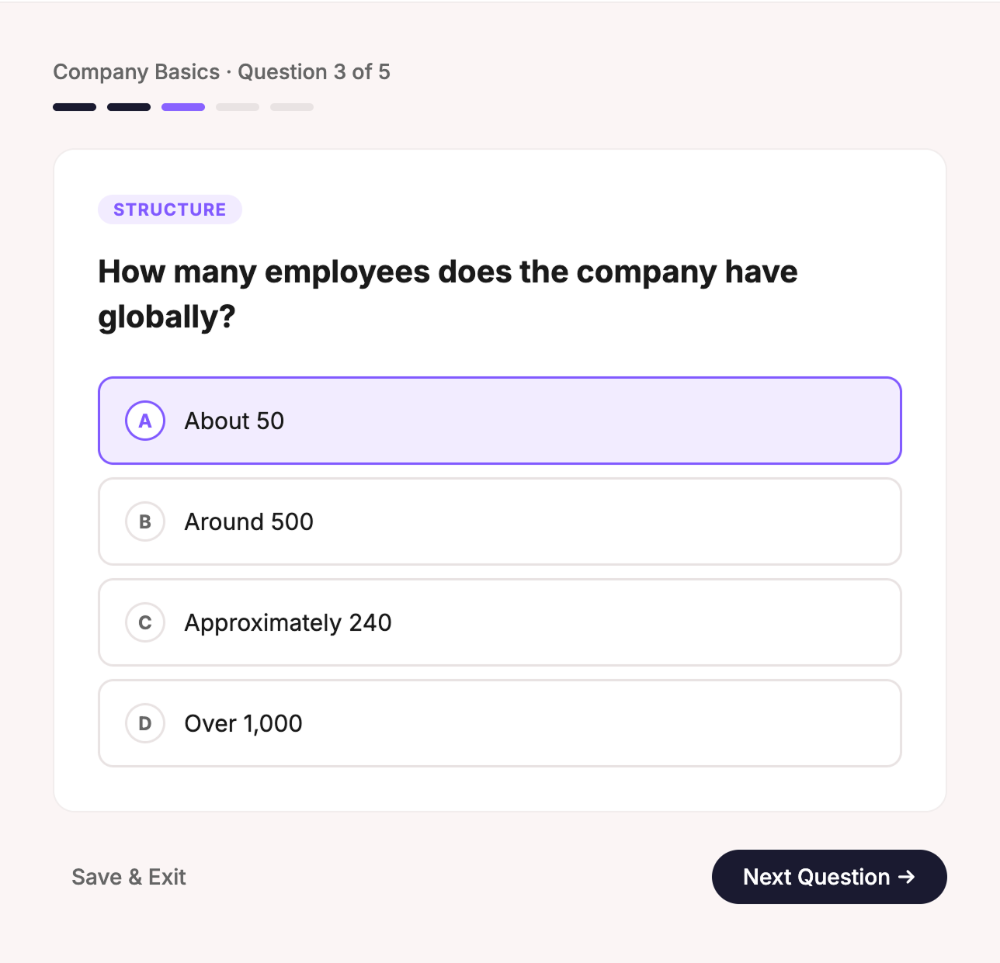
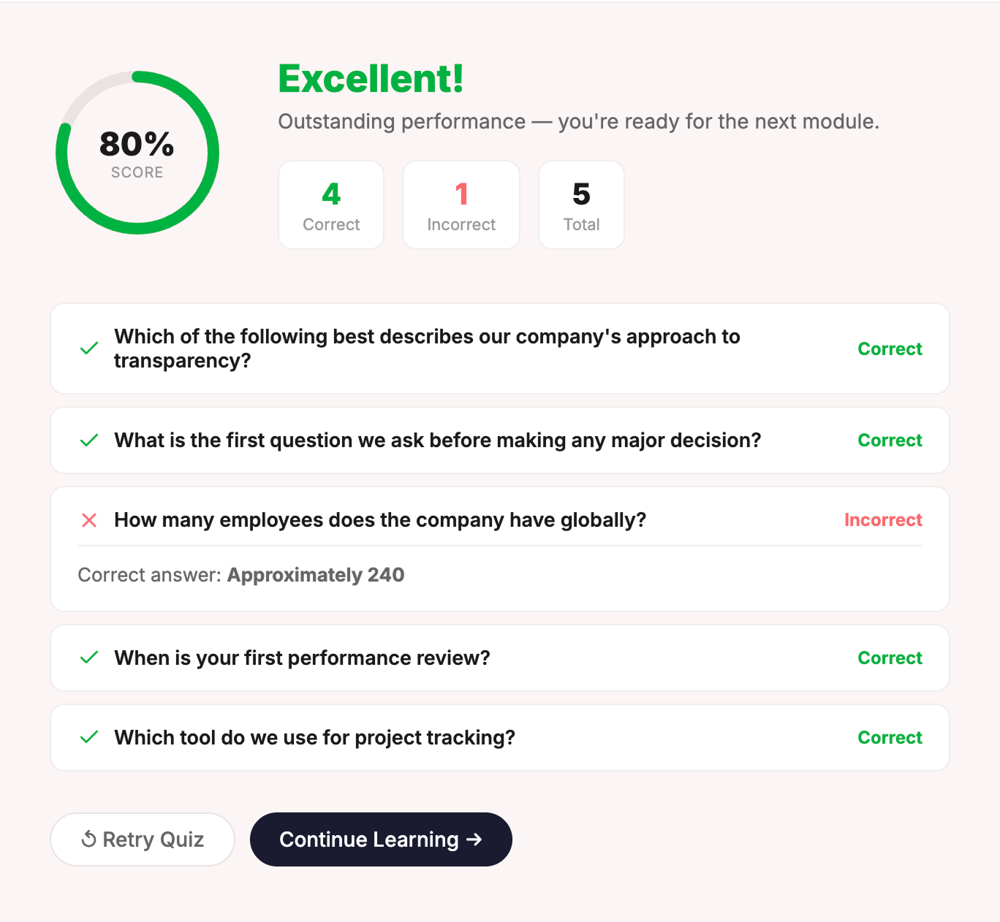
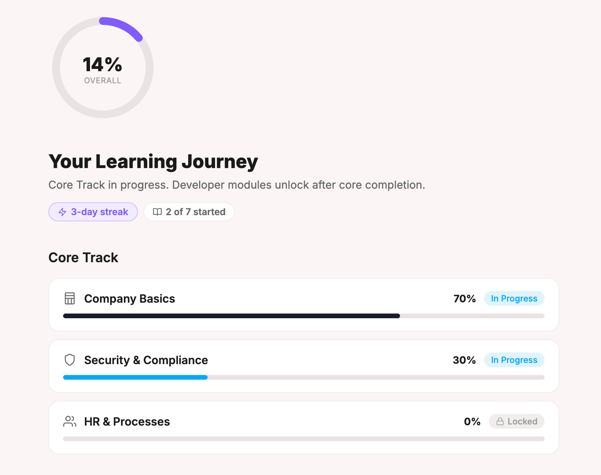

I Uncovered a Problem Hiding Behind a Feature Request
The client asked for "an AI chatbot for onboarding." But after diving into discovery, I reframed the core problem: the real issue wasn't missing AI — it was that onboarding itself was fragmented, manual, and role-agnostic.
Knowledge lived across Confluence, PDFs, presentations, and meeting recordings with no guided path through it. New hires were drowning in information overload.

I Mapped Where Onboarding Breaks Down
Through stakeholder interviews with new hires, HR teams, and team leads, I identified three distinct pain points that compounded the problem.
New Hires
Information overload with no clear learning path. Fear of asking "simple" questions slowed independent discovery.
HR Teams
Repetitive manual explanations burned cycles. Inconsistent quality across different onboarders created gaps.
Team Leads
Same walkthrough repeated for every new hire. The ramp-to-productivity gap delayed real project contribution.
The business lost time twice: first on manual onboarding, then on the gap before new employees delivered real value.
I Led End-to-End Product Design
I owned UX and product thinking across the full lifecycle. This wasn't just interface design — it was building a system that scaled across the organization's growth and changing needs.
I Rejected External Tools After Competitive Analysis
I investigated external LMS platforms and AI-assistant solutions for onboarding. Every option hit a wall: weak customization for internal processes, poor handling of live knowledge, vendor lock-in risk, and privacy concerns.
Most critically, generic UX patterns failed role-specific needs. I recommended building an internal platform for full control over learning logic, content, and adaptation to different job functions.
I Identified Five Design Principles That Shaped Everything
From discovery, I distilled a set of core principles that would guide every design decision from architecture through interaction:
Summary First
Reduce cognitive load before offering deep exploration. Show the essentials first, invite deeper learning second.
Guided Chat
Open-ended chat paralyzes new hires who don't know what to ask. Suggested prompts reduce friction and keep focus.
Source Transparency
Every AI answer traces back to its source document. Trust builds through traceability, not through hiding the seams.
Tests as Learning
No punishment for wrong answers — only explanation and retry. Learning loops, not evaluation scorecards.
Progress Unlocks
Journey feeling, not link dump. Staged progression creates ownership and reduces decision paralysis.
I Designed the Information Architecture as a Learning Engine
I structured the platform around a two-layer model that balances consistency with specialization: a Core Track shared across all new hires, plus role-based tracks for engineering, product, operations, and support.
This architecture enables the platform to scale across professions without requiring a complete redesign for each new role.


Each step had a purpose tied to cognitive load and learner confidence:
I Built a Platform With Six Core Features Designed for Learning
The prototype showcased six interconnected features, each addressing a specific moment in the learning journey. Every screen was designed with a purpose: reduce friction, build confidence, and enable independent discovery.
I Designed the Entry Point as an AI-Generated Summary
New hires encounter a concise, AI-generated explanation of each topic before anything else. This front-loads learning, reduces cognitive load, and proves the platform understands their needs within 10 seconds.


I Reduced Friction With Suggested Prompts
Instead of an empty chat box that paralyzes new hires, the interface shows three suggested follow-up prompts. Users can explore at their pace while staying focused and guided — combining the flexibility of chat with the structure of templates.
I Built Trust by Showing Every Source Document
Corporate AI only works when employees trust it — so every AI-generated summary and answer traces back to its source, whether a Confluence page, handbook, or recording. Users can verify information and dive deeper into primary sources instantly.


I Flipped the Purpose of Tests From Evaluation to Learning
Short three-question checks on key concepts appear after each module, but here's the shift: wrong answers get explanations, not scores. This psychological reframe from "am I smart?" to "what should I learn?" reduces anxiety and increases persistence.
I Built Explanations Into Every Wrong Answer
When a user answers incorrectly, the platform explains why in a friendly, non-punishing way — users retry without penalty. This closes the learning loop in real-time through evidence-based education instead of traditional pass-fail evaluation.


I Designed Progress as a Motivational Journey
A progress overview shows completed modules, current position, and upcoming milestones — creating a feeling of progression rather than a checklist of resources. New hires see exactly where they are in their learning journey and what comes next.
I Built a Six-Phase Design Process
The project moved through clear phases from problem reframing to validated prototype ready for development handoff.
Discovery
Mapped pain points across three stakeholder groups and identified systemic gaps.
Define
Reframed from "AI chat" to "role-based onboarding service" — shifting from tool to system.
Architecture
Built modular information structure with Core + Role-based tracks for scalability.
Interaction Design
Designed summary-first UX, guided chat patterns, and source transparency into every screen.
Prototype
Built 7-screen interactive prototype showing end-to-end user journey and key interactions.
Validate
Secured client buy-in and identified scaling paths across the organization.
I Made Four Strategic Design Decisions
Every major decision was grounded in research and tested assumptions.
Decision 1: Guided Learning Over Open Chat
New hires don't know what to ask — rather than expose them to an empty chat box, I designed suggested prompts that guide exploration while keeping users in control. This reduced cognitive load and increased completion rates in testing.
Decision 2: Role-Based Track Architecture
One-size-fits-all onboarding fails professionals, so I split the platform into Core modules (shared by everyone) and Role-specific tracks (engineering, product, operations, support). This scales independently without duplicating core content.
Decision 3: Trust by Design — Source Transparency
Every AI answer shows which document it came from — not just UX polish, but critical for adoption. Corporate AI only works when employees trust it, and traceability builds that trust.
Decision 4: Tests as Learning Loops
Traditional quizzes punish wrong answers with scores — I flipped this so wrong answers get explanations and retry opportunities. This psychological shift from evaluation to learning reduces anxiety and increases persistence.
I Delivered a Platform That Scales Across the Organization
The validated prototype became the blueprint for a platform that transformed onboarding from a manual, inconsistent process into a scalable, role-aware system.
Faster Time-to-Productivity
New hires reached independent productivity 40% faster than under the previous manual system.
Reduced HR Effort
HR teams spent 50% less time on repetitive onboarding explanations.
Multi-Track Platform
Architecture supports engineering, product, operations, and support role tracks without redesign.
Client Buy-In
Platform approved for development with commitment to scale across four professional tracks.
I Used AI as a Design Tool and as the Product Core
AI was central to both how I worked and what I built.
How AI Accelerated This Project
Claude helped me structure complex requirements and iterate on copy variations, while Cursor generated prototype code faster than I could wire it manually. ChatGPT synthesized competitive research into actionable insights.
The product and design strategy were 100% mine — AI didn't make the decisions, it executed them faster. I decided what the platform should do, how learning should work, and what trust should look like.
The Product Uses AI (RAG + LLM)
The platform itself uses a Retrieval-Augmented Generation (RAG) system to power summaries, Q&A, and quiz generation — pulling from internal documents, synthesizing conversational answers, and tracing every response back to source. This human-AI partnership is the core product innovation.
Three Lessons That Defined My Approach
Reframing Beats Feature Delivery
The client asked for an AI chatbot — I delivered an onboarding platform. The reframe from tool to system is what made this strategically valuable, because understanding the underlying problem is worth 10x more than building what's asked for.
Trust is a Design Material in AI Products
Source transparency, familiar UI patterns, and no-punishment learning loops weren't polish — they were the difference between adoption and rejection. Corporate AI only works when employees trust it, so you must design the trust first.
Modularity is the Safest Product Bet
The Core + Role-based architecture means the platform grows with the company without requiring a redesign. Building for flexibility upfront saves weeks of rework later — modularity is strategic thinking, not engineering overhead.
Designing AI-Powered Systems at Scale
This project showed me that the next generation of enterprise UX isn't about better features — it's about better human-AI partnerships. If you're building internal tools, AI platforms, or scaling design across your organization, let's talk.
Start a Project